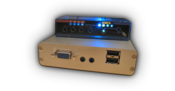

|
To facilitate the development of the code, it helps to have a good baseline system for development. Given the target operating system (Linux) and the selected middleware (Java), an x86 system of some sort seemed the short way to go. On the other hand, of course, embedded systems often provide packaging, power advantages and cost reductions in volume. The compromise architecture is built upon the ALIX family of motherboards by PC Engines. The complete bill of materials follows, with estimated pricing. The core is built off ALIX 3D3 and associated support hardware. We provide Building OpenRemote Hardware Reference Implementation as well as software installation instructions for our reference implementation. This system is currently intended for hardware developers to test with and for software developers who wish to test their implementation against a complete hardware and software stacks. Please contact us directly if you want this box pre-assembled for you. You can also discuss this hardware setup on our design forums. |
 |
|
| ||||||||||||||||

Bill of Materials
| Quantity | Item | Description | Vendor | Vendor Part No | Cost |
|---|---|---|---|---|---|
| 1 | ALIX 3D3 Main Board | ALIX 3D3 Board with 1 LAN and 2 miniPCI, 2 USB + VGA. Built-in 256MB memory. AMD Geode 500Mhz LX800. DC or passive POE power (7V to 20V). Dimensions: 100mm x 160mm. Energy consumption: ~3W at idle, 5W peak without MiniPC or USB devices. |
PC Engines or distributors | alix3d3 | $127.00 |
| 1 | ALIX Series 3 Enclosure | Aluminium Indoor enclosure for ALIX Series 3 boards. Dimensions 113 x 163 x 30mm. Note that front panel must be ordered separately. Cutouts in the back are for 1 LAN, DC jack, serial DB9 connector, two SMA antennas, 3 LEDs |
PC Engines or distributors | box2c | $6.25 |
| 1 | ALIX Series 3 Enclosure Front Panel | Front panel for enclosure with a cutout for 2 USB ports and VGA output. [Picture] |
PC Engines or distributors | brk3c3 | $0.75 |
| 1 | WiFi Client mini-PCI | Wistron DCMA81 Atheros 802.11a/b/g miniPCI wireless card. U.FL connector compatible with PC Engines I-PEX pigtail cables. Atheros AR5414 chipset. FCC and CE certified. Dimensions: 60mm (L) x 25.5mm (W) x 5mm (H). Security: 64, 128, 156-bit WEP, 802.1x Authentication, AES-CCM & TKIP encryption. Lead-free and RoHS compliant. [Data sheet] [Picture] Note that use of 802.11a requires an antenna for 5Ghz band (802.11b/g are at 2.4Ghz band). |
PC Engines and distributors | dcma81 | $24.00 |
| 2 | WiFi Antenna | Antenna for 2.4 GHz band, 5 dBi nominal gain. Reverse SMA connector. |
PC Engines and distributors | antsma | $5.50 |
| 2 | RF Cable | Pigtail cable to connect mini-PCI WiFi to antennas, I-PEX to SMA female reverse connector, 15 cm cable, RoHS compliant. |
PC Engines and distributors | pigsma | $3.20 |
| 1 | CompactFlash Storage | 4GB. SMI controller, MLC flash. RoHS compliant. |
PC Engines and distributors or your local electronics store. | cf4dp | $15.00 |
| 1 | AC Adapter [EU] [UK] [US] | Input voltage 100-240 V AC, 47-63 Hz. Output voltage 18 V DC, 800mA or more. 2.1 mm jack, center positive. CE & RoHS compliant. Note: As an alternative to AC Adapter you may opt to use power over ethernet. See optional parts section below. |
PC Engines [EU] [UK], www.mini-box.com [US] | ac18veur, ac18vuk, PWR-ACDC-15V-1.2A | $6.00 |
| Total: | $187.70 | ||||
{kind=link}
{kind=link}
{kind=link}
{kind=link}
{kind=link}
{kind=link}
Features
The ALIX 3D3 box is a fanless, CompactFlash-storage box with low power consumption, ethernet, WiFi, serial and USB connectivity. It is ideal as an out-of-sight, low-maintenance hardware implementation -- no moving parts, silent, low energy use, low-heat unit.
CPU
AMD Geode 500Mhz LX800
Storage: CompactFlash Socket
CompactFlash card must be bootable. Hot swapping of CF cards is not supported.
Connectivity on Main Board
- 1 LAN port (passive Power over Ethernet is an option)
- 2 USB ports
- 1 Serial (DB9) port
- 2 MiniPCI connectors on the main board for extensions -- in the bill of materials one mini-PCI is used for the 802.11g wireless card
- 1 VGA output
- 1 Audio output
- 1 Audio input
Operating System Support
The operating system should support AMD Geode LX / CS5536 chipset and Via VT6105M controller for LAN.
Voyage Linux is the currently recommended, off-the-shelf Linux distribution (last verified version 0.5.2). See Installing Voyage Linux on Alix for details.
Certifications and Regulations
ALIX 3D3 board conforms to the following rules and regulations:
- Part 15 of FCC rules (US market), complies to Class B digital device limits. Reasonable protection against harmful interference in a residential installation. The equipment generates, uses and can radiate radio energy.
- CE Declaration of Conformity (EU market): when used in a metal enclosing (box2c), conforms to EN-61000-6-3 and EN-61000-6-2 (emissions and electrostatic discharge, residential and industrial)
- The board is designed for installation in a shielded enclosure, metal or plastic with conductive coating. Shielded cables are required for LAN and serial cables.
The Wistron mini-PCI WiFi card, antennas, pigtails and CompactFlash card listed in the bill of materials are lead-free and RoHS compliant.
Pros and Cons
+ Relatively low price for an x86 based system
+ Availability of parts in low volumes
+ No fan, no hard disk drive, no moving hardware parts
+ Low energy, low heat for x86 based system
+ Solid and up-to-date Linux & Java support
- Increasing memory size from current 256MB is not cost-effective
- Future of AMD Geode product line unclear, putting the CPU availability into question
- Higher price and energy-use compared to an ARM based system
{kind=link}